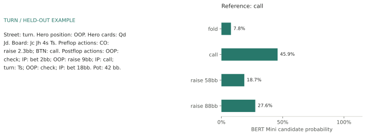
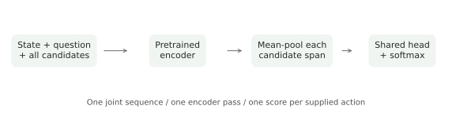
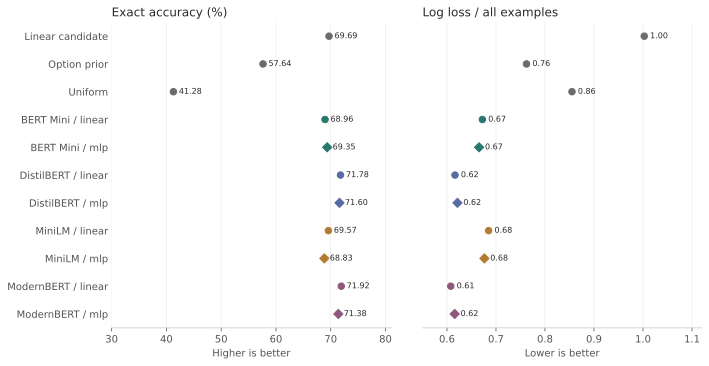
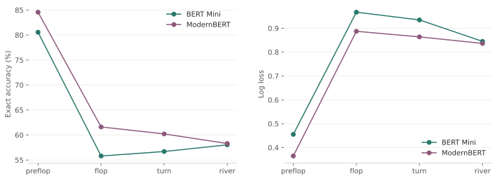
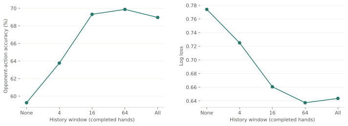
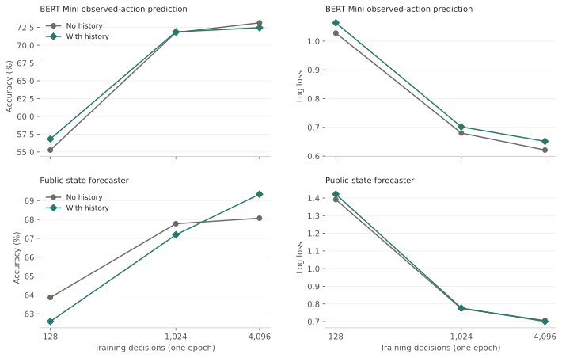

ACM AI Projects
PocketSolver
Learning to score poker decisions
November 13, 2026
Poker decisions combine visible cards, betting history, hidden information, and a changing menu of possible actions. We study a compact alternative to generating an answer: jointly encode the situation and its candidate actions, then score each action with a shared prediction head. We compare four pretrained encoders and two heads on a 10,000-example PokerBench development pool using five scenario-grouped folds. ModernBERT with a linear head has the highest observed exact-action agreement, while all eight transformer variants improve log loss over a linear candidate baseline. We also investigate causal opponent-history summaries in controlled Leduc forecasting and observed-action prediction from real Hold’em histories. History improves the controlled forecasting task, but the current summaries do not establish a benefit for the Hold’em transformer. PocketSolver makes the decision model available in an interactive demonstration. These experiments measure reference or observed action agreement; they do not establish profitable or unexploitable play.
Working research draft · Related work remains to be finalized.
1 Poker as a structured decision problem
A poker hand asks a deceptively compact question: What should Hero do? The answer depends on the visible cards, position, pot, previous actions, and the available choices. Calling and folding are distinct actions; betting 28 big blinds and betting 51 big blinds are also distinct actions. A model that chooses the right action type can still miss the reference by choosing a different amount.
Our starting point is to make those choices explicit. Rather than ask a language model to write an answer and parse it back into an action, we supply the candidate actions alongside the situation. The model returns one score for each candidate. This preserves the exact supplied sizes and supports menus of different lengths.
Figure 1 shows a recorded decision and the scores assigned by the deployed BERT Mini model. The online explorer includes a postflop success, a preflop success, and an action-type mistake. They were selected to illustrate behavior, rather than estimate performance. Each example was held out by this specific checkpoint.

The project separates three questions. First, can a structured encoder learn to agree with PokerBench reference actions? Second, can previous behavior help predict an opponent’s next action? Third, does appending those histories improve a transformer on real Hold’em decisions? These questions use different targets and data, so their scores should be interpreted within each experiment.
2 Scoring actions in one forward pass
2.1 Joint encoding and a shared head
The input is a context string and an ordered list of candidate actions. The encoder adapter adds the fixed question, “What should Hero do?” We serialize the state, question, and all candidates into one sequence with separator tokens. A pretrained encoder produces contextual representations for every token. For each candidate, we average the representations of its own tokens and apply the same scoring head.
For candidate with token positions , the model computes
Here is the encoder output for the joint sequence and is the supplied menu. The head is either a linear projection or a two-layer MLP with a ReLU activation. Training updates both the encoder and head using cross-entropy on the reference candidate index. Candidate padding is masked before normalization.

The design reuses pretrained language representations in the spirit of encoder fine-tuning (Devlin et al. 2019). It avoids generating an action token by token, but a single forward pass is not itself a measured speed advantage. Sequence length, model size, hardware, batching, and serving overhead all affect latency.
2.2 What the interface guarantees
The input boundary keeps labels and source identifiers separate from context and candidates. Contexts contain only cards already dealt and permitted visible information. We do not invent missing stacks or opponent profiles. Inputs that exceed the configured token limit fail explicitly rather than silently losing state or candidate tokens.
One limitation follows from joint encoding: candidate order is visible through positional encodings. Sharing a head does not make the model permutation invariant. Candidate-order augmentation and explicit order-robustness evaluation remain natural follow-up experiments. The model can choose only among the supplied candidates; it does not establish that those candidates exhaust legal or useful poker actions.
3 Evaluating beyond repeated scenarios
3.1 Sources and splits
Our primary action-choice experiment uses the pinned PokerBench training sources (Zhuang et al. 2025). The source audit validates 63,200 preflop rows and 500,000 postflop rows. The development working pool samples 5,000 examples from each source, giving 10,000 examples in total. This sampling balance describes the experiment; it is not an estimate of the frequency of these situations in play.
An early walkthrough used a context-grouped 8,000/2,000 split. Identical contexts never crossed that boundary, but related scenarios often did: 91.8% of validation rows had a scenario group represented in training. We therefore use a broader, answer-free scenario grouping for the model comparison reported here.
Preflop groups use the full previous betting history. Postflop groups use the sorted ranks of the first three board cards, keeping suit variants and later streets together. Across the five maintained folds, neither specified scenario groups nor exact contexts overlap between training and held-out examples. Every example receives exactly one held-out prediction per model. This grouping is a specific stress test; it cannot establish independence under every possible notion of poker similarity.
| Fold | Training examples | Held-out examples | Shared scenario groups |
|---|---|---|---|
| 1 | 8,070 | 1,930 | 0 |
| 2 | 7,889 | 2,111 | 0 |
| 3 | 8,067 | 1,933 | 0 |
| 4 | 7,911 | 2,089 | 0 |
| 5 | 8,063 | 1,937 | 0 |
3.2 Baselines, training, and metrics
We compare uniform candidate probabilities, a training-only option prior, and a linear candidate model with four pretrained encoders: BERT Mini, MiniLM, DistilBERT, and ModernBERT. Each encoder receives both a linear head and an MLP head, for eight transformer configurations and 40 fitted folds.
Every transformer fit uses seed 42, three fixed epochs, batch size 16, encoder learning rate , head learning rate , weight decay 0.01, and maximum sequence length 512. The MLP width is 64. Each fold starts with a fresh encoder, head, and optimizer. Held-out folds do not choose epochs. Baselines are refitted using each fold’s training examples.
Exact accuracy measures agreement with the supplied reference candidate, including its amount. Log loss measures the probability assigned to that reference and penalizes confident mistakes. We also record action-type macro-F1, Brier score, street-specific performance, and multi-option accuracy. The latter excludes decisions with only one candidate, which require no choice; such rows make up 4.64% of the pool. Uniform probabilities have ties, so deterministic exact accuracy and tie-expected accuracy can differ.
These are development comparisons on an inspected pool, with one training seed. Selecting a model from this matrix and quoting the same score does not provide an independent final performance estimate. The maintained workflows do not load the official test, but some original team submissions had already inspected it. An independent evaluation needs a predeclared new holdout or nested selection.
4 What do the models learn?
4.1 Better probability quality, modest accuracy gains
ModernBERT with a linear head has the highest observed exact accuracy, 71.92%, and the lowest log loss, 0.6078. The linear candidate baseline reaches 69.69% accuracy and 1.0025 log loss. The observed accuracy improvement is 2.23 percentage points.

DistilBERT linear reaches 71.78%, only 14 decisions behind ModernBERT out of 10,000. That small gap does not establish a reliable advantage for ModernBERT. Adding an MLP does not consistently improve either metric across encoders. BERT Mini and MiniLM do not beat the linear candidate baseline on exact accuracy in these runs, although all eight transformer configurations have lower log loss.
This distinction matters. A model can make a similar number of top-choice mistakes while distributing its remaining probability more usefully. Lower log loss is evidence about reference-label probability quality. It does not establish that the softmax is calibrated or that it recovers an optimal mixed strategy.
The saved paired scenario-group bootstrap interval for ModernBERT linear’s accuracy gain over the linear candidate baseline is approximately +1.01 to +3.33 percentage points. That interval conditions on the saved fitted models and specified groups; it excludes variation from retraining and cannot remove the consequences of selecting a model after inspecting development results.
4.2 Street-level behavior and illustrative mistakes
An overall average conceals substantial variation between streets. Figure 4 compares the deployed BERT Mini architecture and ModernBERT, using linear heads. Preflop agreement is higher than postflop agreement in these runs. Street counts are uneven: there are 5,000 preflop, 310 flop, 2,021 turn, and 2,669 river decisions. We should avoid attributing those differences to a single mechanism without controlled experiments on the representation, menus, and source distributions.

The hand explorer in Figure 1 complements aggregate metrics by exposing an actual action-type error. It also permits comparison with the saved linear baseline on exactly the same input. These examples are purposefully selected. The available 256-hand demo sample contains no wrong-amount errors for this checkpoint, so that category is not illustrated here. The broader evaluation supports separating amount errors from action-type errors, but a representative error taxonomy requires the full saved decision pool and its declared selection rules.
5 Does opponent history help?
5.1 Controlled forecasting in Leduc
The first history experiment isolates opponent-action forecasting in a small, controlled game. We generate Leduc sessions with five policy profiles: tight, passive, aggressive, balanced, and switching. Fifty opponent instances play two sessions each, giving 6,000 hands and 12,711 recorded decisions. Repeated sessions from one opponent stay in the same split.
Predictors receive the observer’s own private rank, public board, pot and contributions, legal menu, and current public action prefix. Opponent private cards and generator metadata are excluded. History summaries use completed previous hands and match the relevant action opportunities. They cannot look at future hands or the current target.

The masked logistic forecaster improves from 59.26% to 69.87% accuracy when given the selected history summary, while log loss falls from 0.7741 to 0.6373. The paired whole-opponent bootstrap accuracy interval is +3.42 to +18.97 percentage points, conditional on the fitted models and generated population.
More history is not uniformly better. All-history summaries are slightly worse than the selected 64-hand window, and history-based models can lag after a policy switch. The first-five-hands-after-switch slice contains only 40 decisions from two opponent instances, so it is descriptive. These results motivate studying memory under behavior changes; they do not establish human tilt detection or better Hero decisions.
5.2 Connecting histories to real Hold’em inputs
We next reuse causal summaries with replayed Hold’em histories from the Pluribus setting (Brown and Sandholm 2019). The target here is the observed human action. This differs from PokerBench reference-action imitation and from the simulated Leduc task. The transformer receives a summary of completed-hand opponent behavior appended to its input. Learned forecaster probabilities are not injected into the model.
The follow-up uses nested training samples of 128, 1,024, and 4,096 decisions and the same 1,024 validation decisions. The numeric-session-group split, initialization, seed, learning rates, and one-epoch budget remain fixed. Validation does not select an epoch or hyperparameter. The public-state forecaster and BERT Mini have different information boundaries, so their panels are separate matched ablations.

More training substantially improves prediction, but the appended summaries do not establish a transformer benefit. At 4,096 training decisions, accuracy is 73.14% without history and 72.46% with history. Log loss rises from 0.621108 to 0.651398. The paired session-cluster interval for the accuracy change is -2.51 to +1.04 percentage points. The apparent history gain in the original 64-example integration check does not persist in the larger comparison.
The public-state forecaster shows a smaller, different result. At 4,096 training decisions, history increases accuracy from 68.07% to 69.34% and reduces log loss from 0.705272 to 0.700675. Its paired log-loss interval is -0.008054 to -0.001070. This supports a modest conditional forecasting benefit, while leaving the transformer integration question open.
These experiments use one seed, an inspected validation set, and recurring human aliases across different sessions. Session-cluster intervals do not capture retraining variation or generalization to unseen players. A useful next experiment would vary summary representation and memory while preserving paired memberships, then evaluate a predeclared configuration on new sessions or players.
6 Explore PocketSolver
PocketSolver restores the trained BERT Mini encoder and linear candidate head on CPU. Its 256-hand sample consists of multi-option decisions held out by that checkpoint. The reference appears after prediction and is excluded from both model and live LLM inputs. The small checkpoint is a serving choice; it is not the highest-scoring model in the development matrix.
LIVE POCKETSOLVER
Explore the trained model on held-out hands. The optional live LLM comparison uses the application’s existing request allowance.
If the demo is asleep, open it in a new tab to wake it, then reload it here.
The live comparison is an illustration, not a controlled model-versus-LLM study. Provider failures and allowance limits remain visible. A few hands or one browser timing cannot establish general quality or latency advantages. A proper serving comparison should record hardware, cold and warm execution, input lengths, provider settings, successful-response coverage, and repeated measurements.
7 Limitations and next steps
The strongest supported conclusion is narrow: jointly encoding a situation and its candidate actions is a workable supervised interface, and the larger encoders improve reference-label probability quality with modest accuracy gains over a strong simple baseline. Causal opponent summaries help in one controlled forecasting setting, while their current Hold’em transformer integration does not show a reliable gain.
Several limitations determine what to do next. Independent final evaluation and multiple training seeds would clarify how much of the observed ranking persists. Candidate-order perturbations and representation ablations would test whether models depend on incidental serialization or menu shortcuts. Calibration should be fitted and assessed on data separate from final evaluation. Controlled serving measurements would test the practical benefit of avoiding autoregressive output.
Finally, agreement with one reference action is not a payoff evaluation. A single label does not describe a full solver strategy, and observed human actions need not be optimal. Claims about profitable, robust, or unexploitable play require additional repeated-play or game-theoretic evaluation. The present article and demo provide a reproducible foundation for those experiments.
8 Reproducibility and complete results
All reported comparisons use saved protocols and reviewed aggregate results. The report build validates the main CSV against the corresponding JSON, checks the demo hand checksum, and joins examples to the saved fold-specific predictions. It exports the same figures as SVG for the web and vector PDF for LaTeX, together with source and output hashes. No training or live inference runs while rendering the article.
The manuscript, bibliography, shared values, and figure identifiers are common to HTML, PDF, and LaTeX. The print hand and model figures match the default web states. Web-only controls supplement the paper’s argument without carrying claims that are absent from the static version.
| Model | Head | Exact accuracy | Multi-option accuracy | Log loss |
|---|---|---|---|---|
| Linear candidate | — | 69.69% | 68.22% | 1.0025 |
| Option prior | — | 57.64% | 55.58% | 0.7623 |
| Uniform | — | 41.28% | 38.42% | 0.8551 |
| BERT Mini | linear | 68.96% | 67.45% | 0.6722 |
| BERT Mini | mlp | 69.35% | 67.86% | 0.6656 |
| DistilBERT | linear | 71.78% | 70.41% | 0.6164 |
| DistilBERT | mlp | 71.60% | 70.22% | 0.6213 |
| MiniLM | linear | 69.57% | 68.09% | 0.6849 |
| MiniLM | mlp | 68.83% | 67.31% | 0.6764 |
| ModernBERT | linear | 71.92% | 70.55% | 0.6078 |
| ModernBERT | mlp | 71.38% | 69.99% | 0.6158 |
The repository contains the detailed model protocol, scientific audit, Leduc experiment, and Hold’em follow-up. The local draft may precede publication of those files on the repository’s default branch. The generated provenance file identifies the exact local sources used.
References
- Brown, Noam, and Tuomas Sandholm. 2019. “Superhuman AI for Multiplayer Poker.” Science 365 (6456): 885–90. https://doi.org/10.1126/science.aay2400.
- Devlin, Jacob, Ming-Wei Chang, Kenton Lee, and Kristina Toutanova. 2019. BERT: Pre-Training of Deep Bidirectional Transformers for Language Understanding. https://arxiv.org/abs/1810.04805.
- Zhuang, Richard, Akshat Gupta, Richard Yang, Aniket Rahane, Zhengyu Li, and Gopala Anumanchipalli. 2025. PokerBench: Training Large Language Models to Become Professional Poker Players. https://arxiv.org/abs/2501.08328.